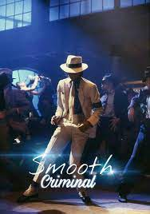

Indice
Sobre mi
Noticias
Agenda
Meteorologia
Viajes
Juegos
Sobre mi
Datos Personales
Nombre: Daniel
Apellidos: Uria Edroso
UO: 282813
Email: UO282813@uniovi.es
Texto presentación
¡Hola! Soy Daniel Uria Edroso, estudiante de cuarto año de Ingeniería de Software.
Apasionado por la tecnología y la programación. ¡Bienvenido a mi mundo digital!
Lista de aficiones
Música
Informática
Desarrollo Web
Administracion de Sistemas
Videojuegos
Fiesta
Coches
Lista de cantantes favoritos
Michael Jackson

Avicii
Videoclip Wake me up
David Guetta
Martin Garrix
David Whistle
Asignaturas favoritas del grado
Administración de Sistemas y Redes
Aprendimos muchas cosas que hasta ese punto no habiamos tocado (configuracion de servidores, operativos, etc...)
Software de entretenimiento y videojuegos
No esperaba usar Unreal Engine en el grado y lo dimos bastante a fondo
Sistemas Operativos
Utilizamos un simulador bastante aclarativo para entender los conceptos basicos de un SSOO
Estructuras de datos
Aprendimos lo esencial sobre EDs y tuve una excelente profesora de laboratorio
Sistemas distribuidos e internet
Me gusto mucho tanto Spring como Node.js
Temperatura media anual de Oviedo
Tº media anual Oviedo
Tº (Celsius)
2013
12.3
2014
13.5
2015
13.4
2016
13.2
2017
13.3
2018
13.1
2019
13.2
2020
13.8
2021
13.0
2022
14.0